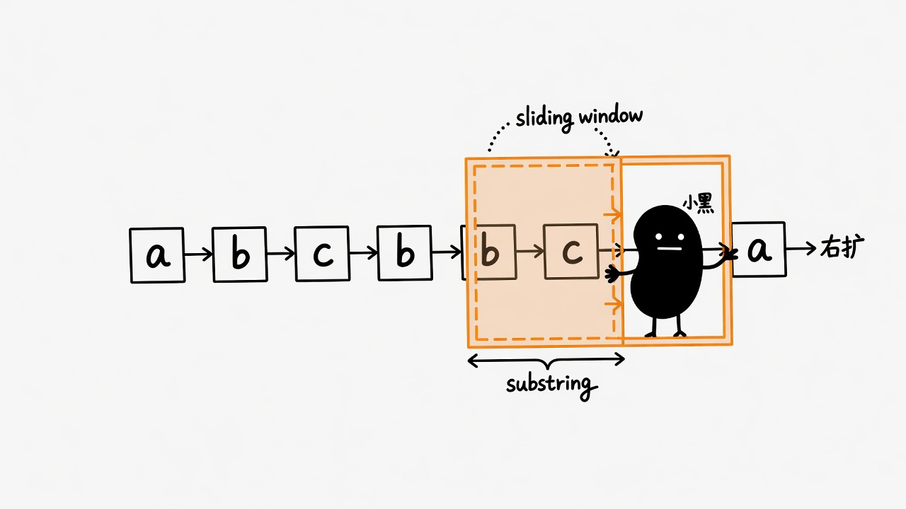
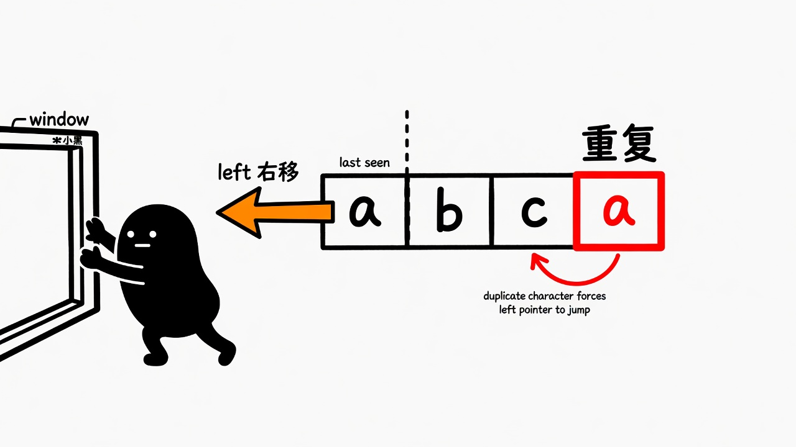
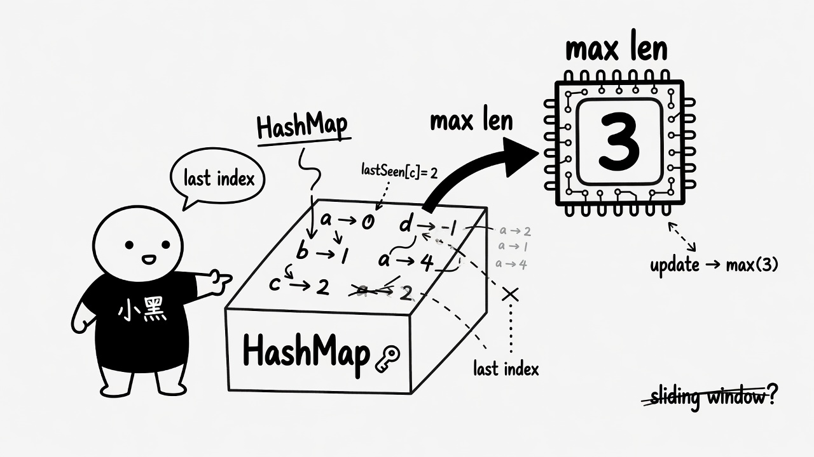
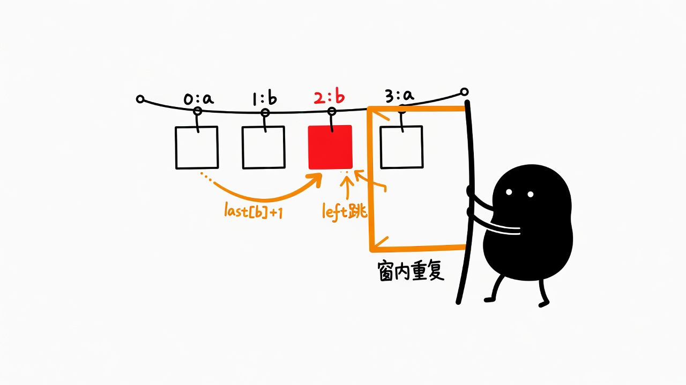
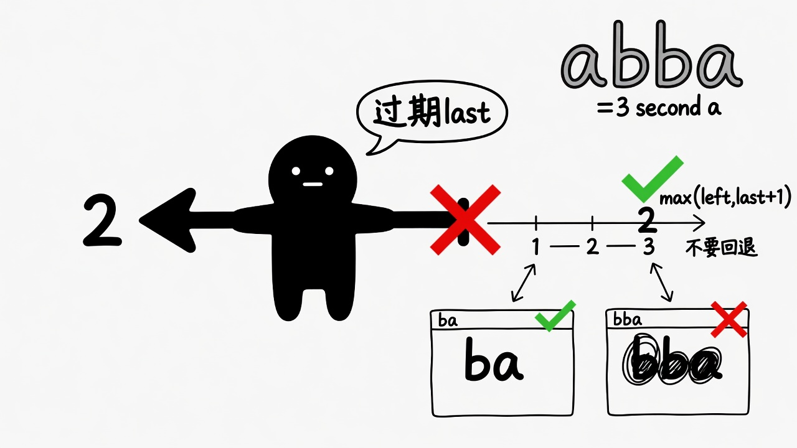
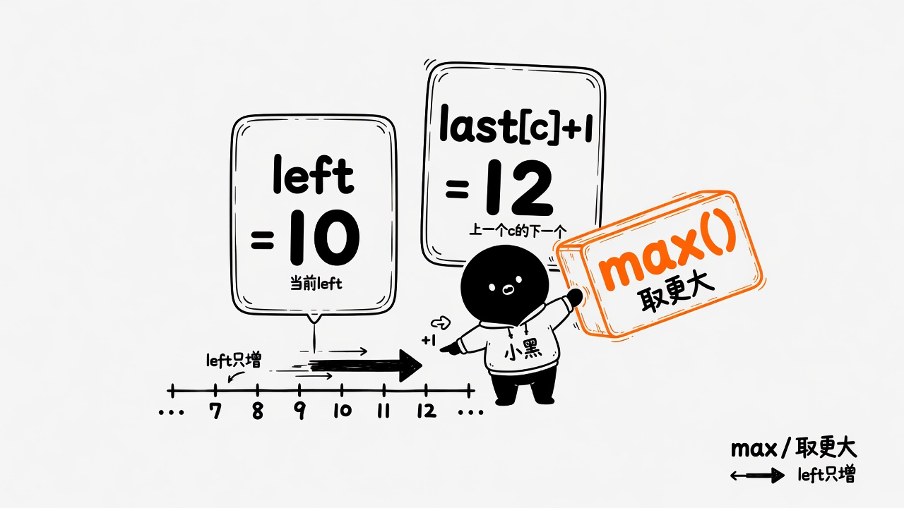

术语保持英文：sliding window · substring · last index · HashMap
先分清 substring（连续） 与 subsequence，再理解窗口如何「右扩、左跳」。 测验统一提交；全对剪贴板含#题号 · slug · 用时。 行为埋点静默上报（页面不展示分析 UI）。
max(left, last[c]+1)。Sliding window 不是为了「看起来高级」。当答案是连续区间、 且区间合法性可用两端指针单调维护时，用窗口把 O(n²) 检查压到 O(n)。 若要的是 subsequence，模型就完全不同。
枚举所有 substring，用 set 判重。建立「合法」定义，n 大时不可用。
right 扩张；窗口内重复则 left 一步步右移并删除字符。正确，但 left 可能多次挪。
HashMap 记 char → last index。
若 last[c] ≥ left，则 left = last[c] + 1；
再更新 last[c]=right 与 max 长度。
在优化什么：重复时 left 一次跳到安全位置，而不是一步步挪。
| 解法 | 换到了什么 | 丢掉了什么 |
|---|---|---|
| Brute | 定义清晰 | 时间 |
| Window + set | 线性均摊 | left 逐步移动 |
| last index | left 一次跳到位 | 要正确用 max(left, …) |
scroll-snap 图解；术语：sliding window / last index。



s = "abcabcbb" right=0..2 → window "abc" ans=3 right=3 'a' 重复 → left=1 → "bca" … right=5 'c' → left=3 → "abc" … 最终 ans=3
left = max(left, last[c]+1)？ 卡点 · 小黑图解
窗口 s[left ..= right] 内字符必须互异。
last[c]+1 = 越过「上一次 c」；
max = left 只增不减，过期的 last 不能把 left 往回拉。

s="abba" 第二个 b，
left = max(0, last[b]+1) = 2，必须跳

a 时 last[a]=0 已在窗外；
回退到 1 会得到 "bba"；要对 max(2,1)=2

max(left, last[c]+1) = 两个候选里取更右的；left 只增
手推 abba（对照上图）
right=2 'b': last[b]=1 ≥ left → left=max(0,2)=2 窗 "b"
right=3 'a': last[a]=0 < left → left=max(2,1)=2 窗 "ba" ✓
错写法 left=last[a]+1=1 → 窗 "bba" ✗
等价：if last[c] >= left { left = last[c] + 1; }
全部完成后提交。全对复制：#题号 · slug · 用时 · 下一步。
Q1. 本题要求的是？
Q2. s = "pwwkew" 的答案是？
wke（或 kew）长度 3；pwke 不连续。Q3. 主推 last-index 写法，遇到重复字符 c 时 left 如何更新？
Q4. 哪些说法正确？（多选）
Q5. s = "bbbbb" 的答案是？
Q6. 为何 left 不能随便往左移？
Q7. last index 写法相对「set + 逐步 left++」主要优化了？